AI agent và chatbot khác nhau thế nào cho SME?
AI agent và chatbot khác nhau ở chỗ chatbot là hệ thống tổ chức tương tác qua hội thoại, còn agent là hệ thống có thể chọn bước tiếp theo, dùng công cụ và điều chỉnh theo kết quả trong phạm vi được giao. Hai khái niệm có thể cùng xuất hiện trong một sản phẩm, nên câu hỏi hữu ích là hệ thống được quyết định điều gì và thao tác đến đâu. Tôi là Lê Tuấn Việt, Marketing Leader tại TAKI Group. Bài viết này phân tích bốn mức tự chủ của AI, đối chiếu kết quả Klarna công bố với những điều chỉnh sau đó, đồng thời hướng dẫn chọn giải pháp phù hợp qua cây quyết định.
- Đăng ngày
- Cập nhật

Tóm tắt nhanh
- Chatbot tổ chức tương tác qua hội thoại; agent có thể chọn bước tiếp theo, dùng công cụ và điều chỉnh theo kết quả. Hai thứ có thể cùng nằm trong một sản phẩm.
- Nên hỏi hệ thống ở mức tự chủ nào cho từng tác vụ: trả lời, gọi công cụ, chọn bước hay ghi dữ liệu, thay vì hỏi đây là chatbot hay agent.
- Trợ lý AI của Klarna xử lý 2,3 triệu hội thoại trong tháng đầu, nhưng sau hơn một năm công ty bổ sung lại nhân sự vì chất lượng phục vụ giảm.
- Nhiệm vụ càng nhiều bước càng dễ hỏng: mỗi bước đúng 95% thì chuỗi mười bước chỉ hoàn tất khoảng 60%. Hãy chọn giải pháp đơn giản nhất còn giải quyết được việc.
Mục lục bài viết13 phần
Chatbot và AI agent là gì?
Chatbot là ứng dụng phần mềm giao tiếp với người dùng bằng văn bản hoặc giọng nói, theo định nghĩa của IBM. Một bot kịch bản có thể đi theo cây lựa chọn; một chatbot dùng AI có thể hiểu câu hỏi linh hoạt hơn.
Hội thoại là cách người dùng tiếp cận chức năng của hệ thống, không phải bằng chứng rằng hệ thống chỉ biết trả lời. IBM giải thích chatbot hiện đại có thể kết nối ứng dụng doanh nghiệp và thực hiện một số tác vụ. Agent cũng có thể dùng giao diện hội thoại. Vì vậy, câu chatbot chỉ nói, agent mới làm giúp hình dung ban đầu nhưng dễ bỏ qua phần giao nhau.
Trong phạm vi bài này, AI agent là hệ thống có khả năng lựa chọn cách thực hiện nhiệm vụ bằng AI, sử dụng công cụ và phản hồi từ môi trường. Mức tự chủ tùy thiết kế: có agent chỉ nghiên cứu và soạn đề xuất; có hệ thống được phép ghi dữ liệu sau khi đủ điều kiện. Bài viết tập trung vào cách đánh giá chúng trong AI Marketing.
Bốn mức tự chủ thay cho câu hỏi chatbot hay agent
Cách hữu ích nhất để nói chuyện với nhà cung cấp là bỏ hẳn câu hỏi đây là chatbot hay agent, và thay bằng câu hỏi hệ thống đang ở mức tự chủ nào cho tác vụ cụ thể này. Bốn mức dưới đây đủ để phân loại gần như mọi sản phẩm trên thị trường.
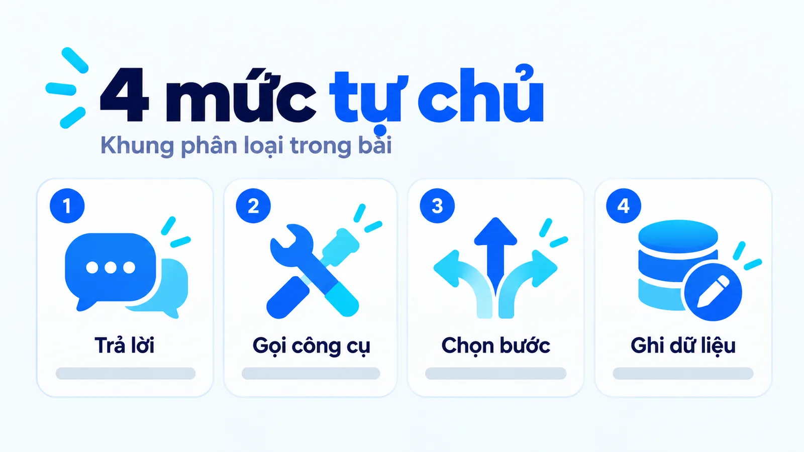
- Mức 1, trả lời: hệ thống chỉ trả lời câu hỏi, ví dụ tư vấn thông tin.
- Mức 2, gọi công cụ: hệ thống gọi công cụ tại một bước cố định, ví dụ tra cứu hoặc đặt lịch theo luồng định sẵn.
- Mức 3, chọn bước: hệ thống tự lựa chọn bước tiếp theo và điều chỉnh theo kết quả. Agent bắt đầu từ mức này.
- Mức 4, ghi dữ liệu: hệ thống được phép ghi dữ liệu hoặc đổi trạng thái sau khi đủ điều kiện, ví dụ tạo phiếu hỗ trợ.
Bốn mức này không phải thang đo chính thức của ngành, mà là cách phân loại dùng được khi đi mua. Điểm quan trọng là mỗi tác vụ có một mức riêng. Cùng một sản phẩm có thể ở mức 4 cho việc tạo phiếu hỗ trợ, nhưng chỉ ở mức 1 cho việc tư vấn giá, vì doanh nghiệp không muốn hệ thống tự báo giá. Hỏi theo tác vụ thay vì hỏi theo sản phẩm là cách duy nhất có được câu trả lời chính xác.
Ví dụ, nút chat trên website có thể dẫn đến câu trả lời FAQ, một luồng đặt lịch định sẵn hoặc agent xử lý yêu cầu phức tạp. Cùng vẻ ngoài không đồng nghĩa cùng cơ chế. Tên gọi trong tài liệu bán hàng cũng chưa chứng minh mức tự chủ thật.
Agent thực hiện nhiệm vụ bằng cách nào?
Anthropic phân biệt workflow và agent: workflow đi theo đường xử lý được định trước; agent để mô hình quyết định linh hoạt hơn về quá trình và việc dùng công cụ. Đây là một cách phân biệt kiến trúc hữu ích, không phải chuẩn đặt tên bắt buộc cho mọi nhà cung cấp.
Hình dung agent nhận mục tiêu, xem thông tin đang có, chọn bước phù hợp, gọi công cụ rồi kiểm tra kết quả. Nếu thiếu thông tin, nó có thể hỏi thêm hoặc dừng. Nếu công cụ báo lỗi, hệ thống cần biết trạng thái để tránh xem một đề xuất chưa thực hiện là việc đã xong.
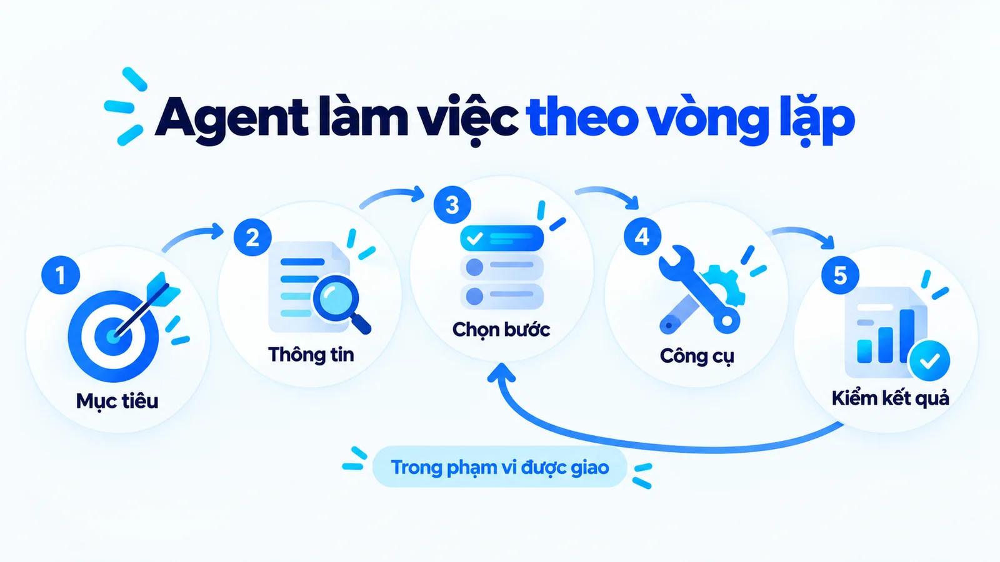
Việc lặp lại và điều chỉnh trong một nhiệm vụ không tự chứng minh agent đã học để thay đổi mô hình. Bộ nhớ cũng không mặc định tồn tại lâu dài giữa mọi phiên. Muốn biết hệ thống nhớ gì, cần xem dữ liệu được lưu và quy tắc dùng lại dữ liệu đó.
Một chuỗi nhiều bước chưa chắc cần agent. Nếu mọi đường đi đều rõ và ổn định, quy trình định sẵn có thể phù hợp. Cách dựng loại quy trình này, kèm năm mẫu luồng có tên, được trình bày trong bài AI workflow là gì.
AI agent và chatbot khác nhau ở những tiêu chí nào?
Hai loại hệ thống khác nhau ở trọng tâm, quyền chọn bước tiếp theo, cách dùng công cụ, quyền ghi dữ liệu và cách đo thành công. Bảng dưới đây tóm tắt năm tiêu chí đó.
| Tiêu chí | Chatbot | AI agent |
|---|---|---|
| Trọng tâm | Tương tác qua hội thoại | Theo đuổi nhiệm vụ hoặc mục tiêu |
| Bước tiếp theo | Theo thiết kế hội thoại, có thể kết nối tác vụ | Có thể được mô hình lựa chọn trong phạm vi cho phép |
| Công cụ | Có thể tra cứu, đặt lịch, tạo yêu cầu | Có thể phối hợp công cụ và phản hồi qua nhiều bước |
| Quyền ghi dữ liệu | Tùy cấu hình, không suy từ tên | Tùy phân quyền, không mặc định toàn quyền |
| Thành công | Câu trả lời hoặc tác vụ hội thoại phù hợp | Kết quả nhiệm vụ đáp ứng tiêu chí đã giao |
Bảng mô tả trọng tâm thường gặp, không chia sản phẩm thành hai hộp kín. Một nền tảng có thể chứa chatbot, workflow và agent; từng tác vụ vẫn cần được đánh giá riêng.
Một triển khai thật đạt được gì trong tháng đầu?
Con số công khai rõ ràng nhất đến từ Klarna. Theo hồ sơ khách hàng mà OpenAI công bố năm 2024, trợ lý AI của công ty này xử lý 2,3 triệu cuộc hội thoại trong tháng đầu tiên, tương đương hai phần ba tổng số cuộc chat hỗ trợ khách hàng, và bằng khối lượng công việc của khoảng 700 nhân sự toàn thời gian.
Các chỉ số đi kèm cũng đáng chú ý. Thời gian xử lý một vấn đề giảm từ 11 phút xuống dưới 2 phút. Số lần khách phải hỏi lại giảm 25%, nghĩa là chất lượng giải quyết lần đầu tăng chứ không chỉ tốc độ tăng. Hệ thống hoạt động tại 23 thị trường, hỗ trợ hơn 35 ngôn ngữ, và được ước tính mang lại 40 triệu đô la cải thiện lợi nhuận trong năm 2024.
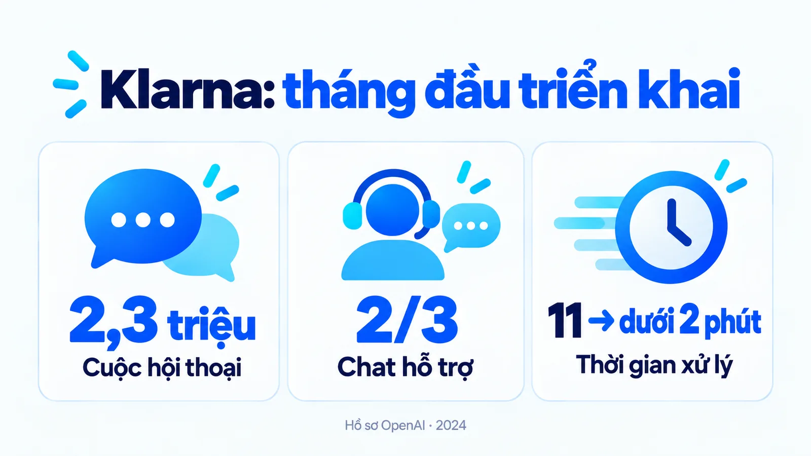
Có ba điều đáng lưu ý khi đọc bộ số liệu này. Thứ nhất, đây là số liệu do bên bán công nghệ công bố về khách hàng của mình, nên nó được chọn lọc theo hướng có lợi, dù các con số bản thân chúng không bị nghi ngờ.
Thứ hai, Klarna là công ty tài chính quy mô toàn cầu với lượng câu hỏi lặp lại rất lớn và rất chuẩn hóa, điều kiện lý tưởng cho tự động hóa mà phần lớn SME không có. Thứ ba, đây là số liệu tháng đầu tiên, tức giai đoạn hệ thống còn mới và được theo dõi sát nhất.
Đây là bộ số liệu được trích dẫn nhiều nhất trong mọi tài liệu bán giải pháp AI cho doanh nghiệp. Phần lớn tài liệu đó dừng lại ở đây.
Vì sao Klarna phải điều chỉnh sau hơn một năm?
Vì chất lượng phục vụ giảm xuống, và theo chính người đứng đầu công ty, nguyên nhân không nằm ở công nghệ. Forbes đưa tin ngày 18 tháng 5 năm 2025 rằng CEO Sebastian Siemiatkowski cho biết việc quá tập trung vào cắt giảm chi phí, chứ không phải bản thân AI, đã dẫn tới chất lượng thấp hơn.
Cần đọc kỹ điều công ty thật sự làm, vì báo chí hay rút gọn thành Klarna bỏ AI. Họ không bỏ. Trợ lý AI vẫn đang làm khối lượng công việc tương đương hơn 800 nhân sự toàn thời gian, tăng so với con số 700 ban đầu.
Điều được thêm vào là một chương trình thí điểm tuyển nhân viên hỗ trợ làm từ xa theo hợp đồng, bên cạnh vài nghìn nhân sự thuê ngoài đang có. Công ty mô tả hướng đi là kết hợp AI quy mô lớn với hỗ trợ chất lượng cao.
Bài học cho SME nằm ở thứ tự đặt mục tiêu. Nếu bạn quyết định mức tự chủ dựa trên số nhân sự muốn giảm, bạn sẽ đẩy hệ thống vượt quá năng lực thật của nó, và chi phí sửa sai sẽ đến sau vài tháng dưới dạng khách không hài lòng. Nếu bạn đặt ngưỡng chất lượng phục vụ trước rồi mới tính mức tự chủ phù hợp, phần tiết kiệm sẽ nhỏ hơn nhưng bền hơn.
Một điểm nữa đáng học: Klarna công bố cả hai chiều. Với một doanh nghiệp đang cân nhắc đầu tư, một case có cả phần điều chỉnh đáng tin hơn nhiều so với một case chỉ có số liệu đẹp của tháng đầu.
Ví dụ SME: tiếp nhận yêu cầu khảo sát văn phòng
Xét một doanh nghiệp thiết kế văn phòng thuộc nhóm SME (doanh nghiệp vừa và nhỏ) nhận tin nhắn muốn khảo sát mặt bằng. Khách cung cấp địa điểm, diện tích dự kiến và thời gian mong muốn. Chatbot có thể hỏi phần còn thiếu, trả lời phạm vi dịch vụ và chuyển yêu cầu đến người phụ trách. Nếu đã tích hợp lịch, bot cũng có thể đưa các khung giờ theo luồng định sẵn.
Đây là ví dụ giả định
Doanh nghiệp thiết kế văn phòng này dùng để giải thích chức năng, không phải dự án đã triển khai hay kết quả khách hàng thật.
Một agent được thiết kế cho nhiệm vụ này có thể xem yêu cầu, đối chiếu khu vực phục vụ, kiểm tra lịch khảo sát, rồi soạn đề xuất phù hợp. Khi địa chỉ chưa rõ hoặc lịch thay đổi, nó cân nhắc bước tiếp theo thay vì cứ đi hết danh sách hành động.
Nhưng biết tra lịch không đồng nghĩa được xác nhận lịch. Nếu chỉ có quyền đọc, đầu ra phải là đề xuất chờ duyệt. Nếu khách chưa xác nhận, hệ thống không nên báo đã đặt lịch chỉ vì tìm thấy một khung giờ trống.
Khác biệt cần quan sát là ai chọn bước tiếp theo và hệ thống kiểm chứng trạng thái ra sao. Nếu mọi nhánh đã cố định theo điều kiện rõ, bạn đang xem một workflow có AI, dù nhà cung cấp gọi đó là agent.
Tôi ưu tiên hỏi khi dữ liệu thiếu hoặc hai điều kiện xung đột, hệ thống làm gì. Câu trả lời này thể hiện năng lực vận hành rõ hơn một màn demo chạy đúng với dữ liệu đẹp.
Ba lớp quyền cần tách khi ứng dụng vào marketing
Đọc dữ liệu, soạn đề xuất và thực hiện hành động là những quyền khác nhau. Doanh nghiệp có thể giao cho agent tổng hợp yêu cầu nhưng giữ việc thay đổi trạng thái lead hoặc xác nhận cam kết ở bước duyệt riêng.
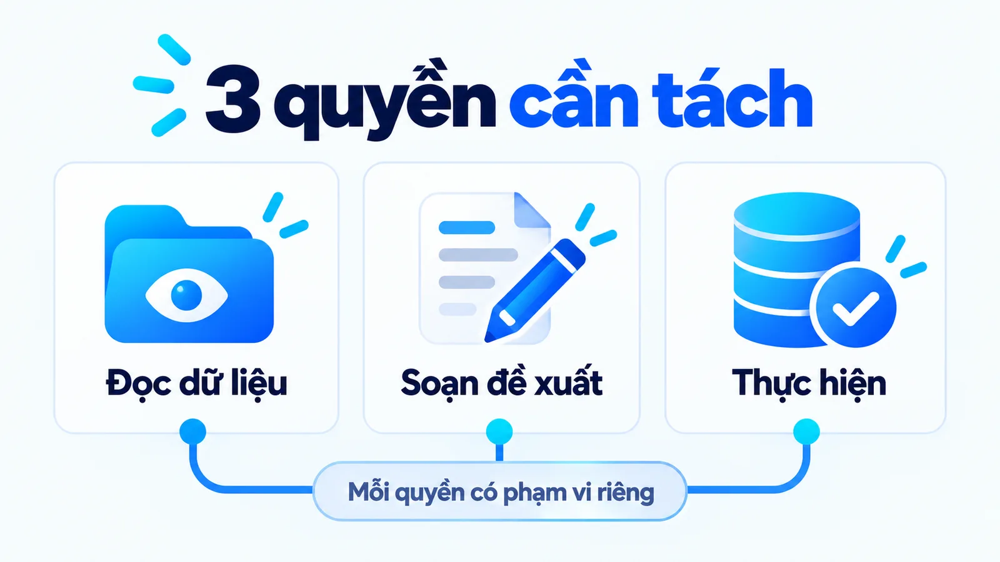
Trong ví dụ khảo sát, dữ liệu đầu vào cần đủ cho nhiệm vụ, có nguồn và được dùng trong phạm vi phù hợp. Agent không cần xem toàn bộ hồ sơ khách hàng chỉ để đề xuất giờ khảo sát. Quyền rộng hơn không tự làm kết quả tốt hơn. Về cách phân loại dữ liệu khách hàng theo nguồn, xem bài Zero-party data là gì? Khác first-party data thế nào?
Ba trạng thái khi ghi dữ liệu
Khi ghi dữ liệu, cần phân biệt ba trạng thái là dự kiến, chờ duyệt và đã thực hiện, và không được gộp chúng lại trong bất kỳ báo cáo nào.
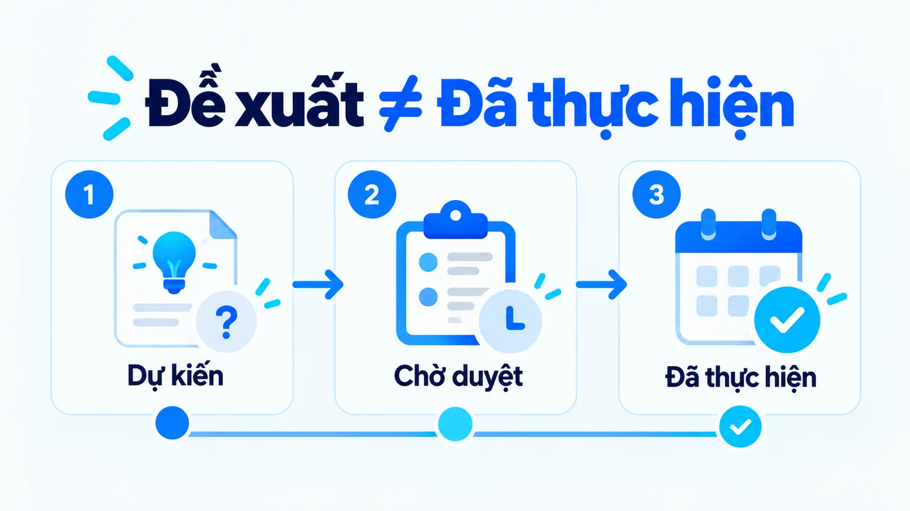
Nếu công cụ lỗi sau một bước, người phụ trách cần biết phần nào đã xong để xử lý tiếp; gửi lại cả chuỗi có thể tạo yêu cầu trùng. Đây cũng là lý do nhật ký từng bước quan trọng hơn nhiều so với một màn hình tổng kết.
Điểm chuyển người cũng cần có nội dung
Khi hệ thống chuyển việc cho con người, thông báo cần nêu thiếu hồ sơ nào, điều kiện nào chưa thống nhất và đề xuất nào đang chờ. Điểm duyệt đó cần những quyền gì được nói kỹ trong bài Human-in-the-loop là gì.
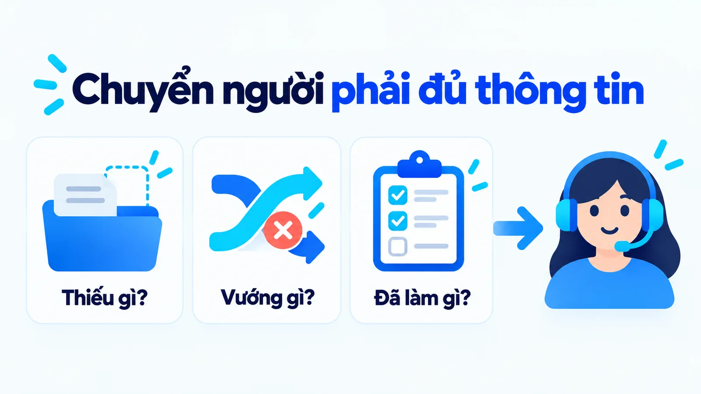
Vì sao nhiệm vụ càng nhiều bước càng dễ hỏng?
Vì xác suất nhân với nhau. Đây là điểm khác biệt quan trọng nhất giữa một chatbot trả lời một câu và một agent thực hiện một chuỗi, và nó giải thích vì sao demo chạy đẹp mà vận hành thật lại hay hỏng.
Giả sử mỗi bước của agent có độ chính xác 95%, một con số nghe rất cao. Một nhiệm vụ mười bước liên tiếp, bước nào cũng phải đúng thì cả chuỗi mới hoàn tất, sẽ chỉ thành công khoảng 60% số lần. Nếu mỗi bước đúng 90%, tỷ lệ hoàn tất trọn vẹn chỉ còn khoảng 35%. Ngược lại, nếu nâng từng bước lên 99%, tỷ lệ hoàn tất đạt khoảng 90%.
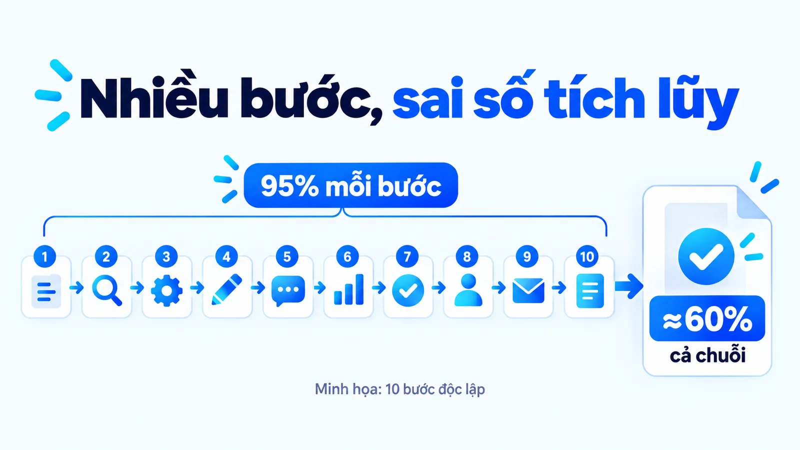
Phép tính trên là minh họa, giả định các bước độc lập với nhau, còn thực tế có bước dễ có bước khó. Nhưng hướng của kết luận thì không đổi: sai số cộng dồn theo cấp số nhân chứ không theo cấp số cộng.
Điều này cũng giải thích một hiện tượng quen thuộc khi chạy thử: agent làm đúng trong buổi demo, rồi sang tuần thứ hai bắt đầu có những lỗi kỳ lạ không lặp lại được. Không phải hệ thống xấu đi. Chỉ là số lượt chạy tăng lên đủ để phần 40% kia bắt đầu xuất hiện, và mỗi lần nó xuất hiện ở một bước khác nhau.
Hai hệ quả thực hành
Thứ nhất, chia nhiệm vụ dài thành vài nhiệm vụ ngắn có điểm kiểm tra ở giữa, thay vì giao một chuỗi mười bước rồi chờ kết quả cuối. Thứ hai, khi so sánh hai nhà cung cấp, đừng hỏi độ chính xác trung bình mỗi bước, hãy hỏi tỷ lệ hoàn tất trọn vẹn cả nhiệm vụ. Hai con số này cách nhau rất xa.
Agent đắt hơn ở những khoản nào?
Ba khoản, và cả ba đều không xuất hiện trên bảng giá phần mềm. Cần đưa chúng vào bài toán trước khi quyết định.
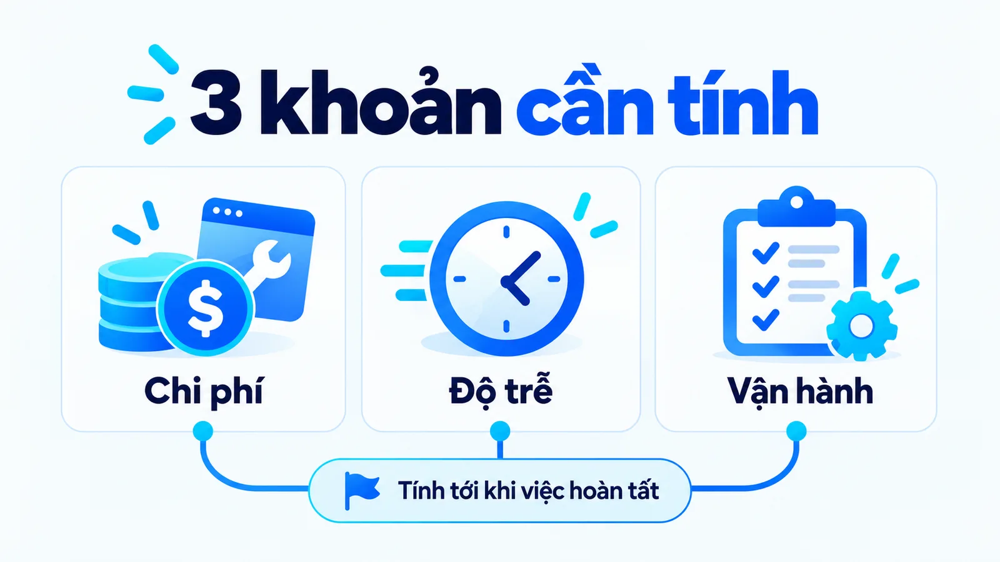
Chi phí mỗi lượt xử lý cao hơn, vì một agent có thể gọi mô hình nhiều lần cho một nhiệm vụ thay vì một lần. Độ trễ cao hơn, vì nhiều bước suy luận và gọi công cụ nghĩa là khách phải chờ lâu hơn. Công sức vận hành cao hơn, vì bạn phải theo dõi nhật ký từng bước, dựng điểm kiểm tra và xử lý trường hợp lỗi giữa chừng.
Ba khoản này chỉ đáng trả khi nhiệm vụ thật sự không liệt kê hết nhánh được. Với một luồng ổn định, workflow rẻ hơn, nhanh hơn và dễ kiểm soát hơn. Khi so sánh, hãy so tổng chi phí xử lý một yêu cầu cho tới khi hoàn tất, không so giá gói phần mềm.
SME nên đánh giá hiệu quả bằng gì?
Hãy bắt đầu từ một công việc có đầu vào và tiêu chí hoàn tất rõ. Với yêu cầu khảo sát, cần xem thông tin được ghi đúng, đề xuất lịch phù hợp và trạng thái bàn giao có thể kiểm tra. Số tin nhắn trả lời chỉ phản ánh một phần hoạt động.
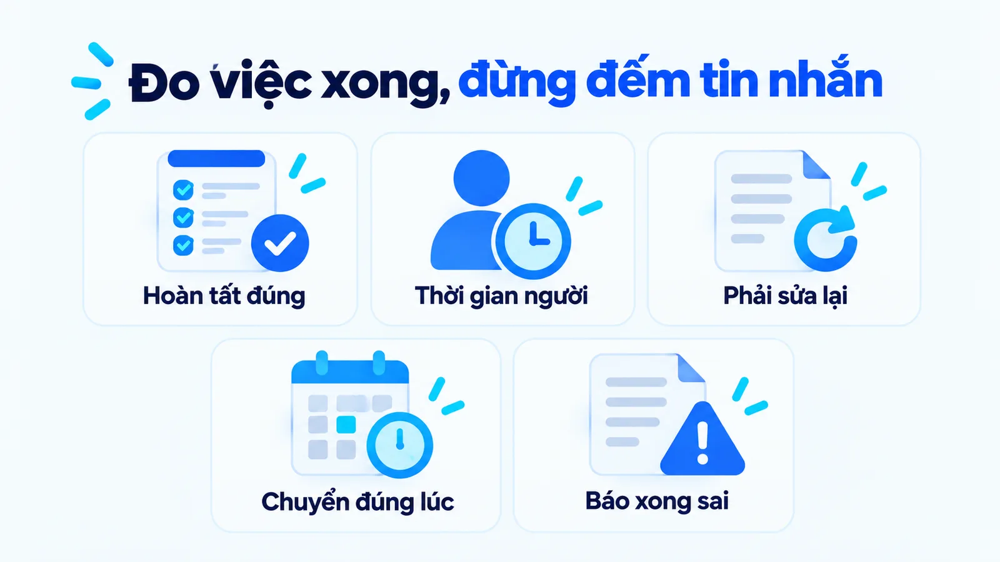
So sánh chất lượng xử lý, thời gian nhân sự còn phải dùng và số yêu cầu cần sửa. Phân biệt chuyển người đúng lúc với chuyển người vì hệ thống không xử lý được phần đã giao. Hai tình huống có cùng hành động nhưng ý nghĩa khác nhau.
Chỉ số cuối cùng trong năm chỉ số là chỉ số ít ai đo nhưng tốn kém nhất: số lần hệ thống báo đã xong trong khi chưa thực hiện. Vụ việc trong bài Ảo giác AI là gì cho thấy một cam kết sai của hệ thống tự động vẫn ràng buộc doanh nghiệp, nên đây là chỉ số nên theo dõi từ ngày đầu.
Một lưu ý về cách so sánh trước và sau. Nếu chỉ so thời gian phản hồi trung bình, gần như mọi triển khai AI đều thắng, vì hệ thống trả lời trong vài giây. Nhưng thời gian phản hồi không phải thời gian giải quyết.
Con số đáng so là thời gian từ lúc khách nhắn tới lúc việc thật sự xong, tính cả phần nhân sự phải can thiệp. Klarna báo giảm từ 11 phút xuống dưới 2 phút chính là con số thứ hai, không phải con số thứ nhất.
Đừng lấy lịch khảo sát làm bằng chứng chắc chắn của doanh thu. Khách còn có thể đổi nhu cầu, không đến hoặc không phù hợp dự án. Cách đọc những hành động nhỏ như đặt lịch mà không xem chúng là kết quả cuối được giải thích trong bài Micro conversion là gì, khác macro conversion thế nào.
Chọn chatbot, workflow hay agent theo tiêu chí nào?
Hãy chọn giải pháp đơn giản nhất còn giải quyết được việc, bằng cách trả lời ba câu hỏi theo thứ tự và dừng ở câu đầu tiên có câu trả lời.
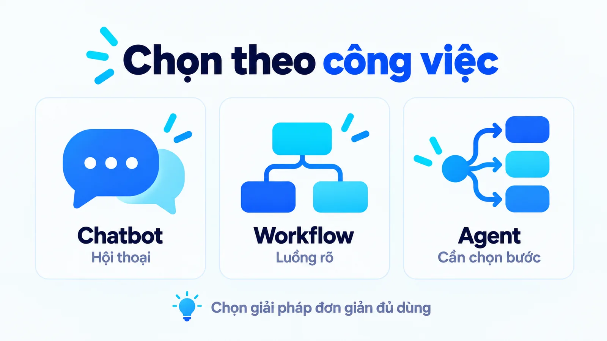
Ba câu hỏi theo thứ tự
Câu một, mọi đường đi đều rõ và ổn định chưa. Nếu rồi, một workflow hoặc chatbot là đủ, và nó rẻ hơn, nhanh hơn, dễ kiểm tra hơn. Câu hai, hệ thống có cần tự chọn bước tiếp theo không. Chỉ khi đầu vào thay đổi nhiều tới mức không liệt kê hết nhánh được thì agent mới đáng cân nhắc. Câu ba, ai chịu trách nhiệm khi hệ thống sai. Nếu chưa trả lời được, chưa nên mở quyền ghi dữ liệu, dù công nghệ đã sẵn sàng.
Năm câu hỏi gửi nhà cung cấp trước khi ký hợp đồng
Khi đã quyết định cân nhắc agent, năm câu hỏi dưới đây nên được gửi cho nhà cung cấp trước khi ký hợp đồng. Chúng khó trả lời bằng một màn demo.
- Thiếu dữ liệu thì hệ thống làm gì? Nó hỏi thêm, dừng lại hay tự điền phần còn thiếu.
- Điều kiện xung đột thì hệ thống làm gì? Nó chọn một nhánh hay chuyển cho người quyết định.
- Công cụ lỗi giữa chừng thì sao? Người phụ trách có biết phần nào đã xong để xử lý tiếp không.
- Hệ thống được ghi những gì? Quyền ghi dữ liệu được phân theo từng tác vụ ra sao.
- Bàn giao cho người như thế nào? Thông báo có nêu thiếu gì, vướng gì và đang chờ gì không.
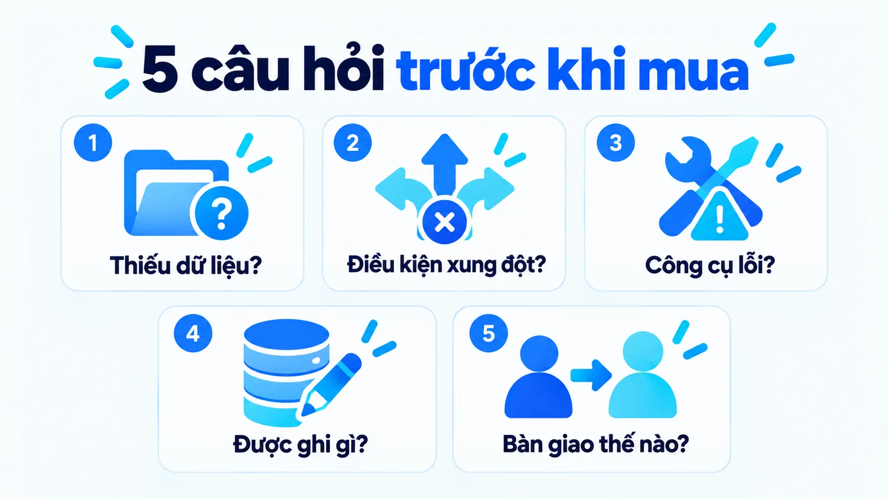
Ba sai lầm hay gặp khi triển khai
Ba sai lầm dưới đây là những sai lầm hay gặp nhất khi triển khai, và sai lầm thứ ba chính là sai lầm mà Klarna đã mất hơn một năm để điều chỉnh.
- Mở quyền ghi quá sớm: mở ngay từ đầu chỉ vì demo chạy mượt là sai lầm tốn kém nhất.
- Chỉ đếm tin nhắn: số tin nhắn trả lời chỉ phản ánh một phần hoạt động, không cho biết việc đã xong đúng chưa.
- Chỉ lo giảm chi phí: cách sửa là đặt ngưỡng chất lượng phục vụ trước rồi mới tính mức tự chủ.
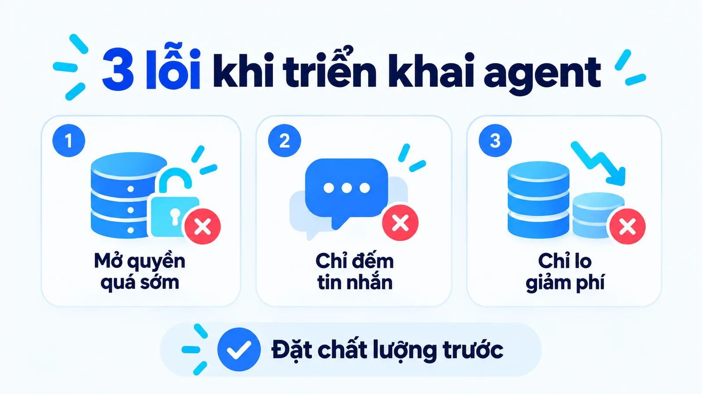
Câu hỏi thường gặp về AI agent và chatbot
AI agent và chatbot khác nhau chủ yếu ở điểm nào?
Chatbot tổ chức tương tác qua hội thoại, còn agent có thể chọn bước tiếp theo, dùng công cụ và điều chỉnh theo kết quả để đạt mục tiêu trong phạm vi được giao. Hai khái niệm có thể cùng nằm trong một sản phẩm, nên cần đánh giá theo từng tác vụ.
Chatbot gọi được công cụ có trở thành agent không?
Chưa đủ để kết luận. Cần xem hệ thống có lựa chọn và điều chỉnh cách thực hiện nhiệm vụ hay chỉ gọi công cụ tại bước định sẵn. Theo bốn mức tự chủ trong bài, gọi công cụ ở bước cố định là mức 2, còn agent bắt đầu từ mức 3.
Agent có cần hoạt động hoàn toàn không có người duyệt?
Không. Mức tự chủ có thể giới hạn theo tác vụ. Đọc dữ liệu và soạn đề xuất tự động vẫn có ích khi quyết định tiếp theo cần người chịu trách nhiệm xác nhận.
SME có phải nâng cấp chatbot thành agent ngay?
Không có quy tắc chung. Nếu vấn đề là trả lời thông tin ổn định, một hệ thống đơn giản có thể đáp ứng. Nếu cần lựa chọn bước linh hoạt, hãy đánh giá agent bằng tình huống thật, điều kiện hoàn tất và phần việc con người còn phải xử lý.
Agent có thay được cả một đội chăm sóc khách hàng không?
Số liệu Klarna cho thấy có thể thay được khối lượng công việc rất lớn, tương đương 700 nhân sự toàn thời gian ngay trong tháng đầu. Nhưng cùng công ty đó, sau hơn một năm, đã bổ sung lại nhân sự hỗ trợ vì chất lượng phục vụ giảm. Câu trả lời thực tế là thay được phần lớn khối lượng, không thay được toàn bộ vai trò.
Vì sao demo chạy tốt mà triển khai thật lại hỏng?
Một nguyên nhân phổ biến là sai số cộng dồn. Mỗi bước đúng 95% nghe rất cao, nhưng một chuỗi mười bước chỉ hoàn tất trọn vẹn khoảng 60% số lần. Demo thường chỉ chạy một tình huống với dữ liệu đẹp, nên không lộ ra vấn đề này.
Nên bắt đầu từ mức tự chủ nào?
Với phần lớn SME, hãy bắt đầu ở mức đọc dữ liệu và soạn đề xuất, chạy vài tuần, đo tỷ lệ phải sửa lại, rồi mới cân nhắc mở quyền ghi. Mở quyền ghi ngay từ đầu chỉ vì demo chạy mượt là sai lầm tốn kém nhất trong ba sai lầm đã nêu.
Kết luận: AI agent và chatbot khác nhau ra sao và nên chọn thế nào?
Tóm lại, AI agent và chatbot khác nhau ở quyền chọn bước, quyền hành động và cách xác nhận kết quả, chứ không nằm ở khung chat. Hiểu ba điều đó giúp bạn đánh giá giá trị của AI agent trong marketing qua công việc cần hoàn thành.
Hãy bắt đầu ở mức đọc dữ liệu và soạn đề xuất, đặt chất lượng phục vụ trước, và chỉ mở thêm quyền khi đã đo được kết quả.